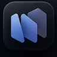

WinDeck transforms your Android phone into a powerful wireless control suite for Windows. Control media, launch apps, sync clipboards, and use your phone as an air mouse over a secure encrypted connec
SHA-256: 4890b8fb9f9b5f621a7192082a7c601539ca29c9a3e962c977d444c31389f3c0
متفحّص آليًا (ترخيص مفتوح + بصمة SHA-256) لكن مش مراجَع يدويًا.
Checked automatically (open license + SHA-256), not manually reviewed.
امسح الكود لفتح صفحة التطبيق
Scan to open this app page
لو كنز مش متثبت عندك: نزّل متجر كنز.
Not installed? Get the Kanz store.